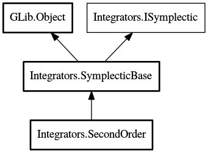

SecondOrder
Object Hierarchy:
Description:
Second-order symplectic integrator concrete subclass. This integrator is time symmetrical.
All known sub-classes:

Namespace: Integrators
Package: doc
Content:
Creation methods:
Methods:
Inherited Members:
All known members inherited from class Integrators.SymplecticBase
All known members inherited from class GLib.Object
All known members inherited from interface Integrators.ISymplectic